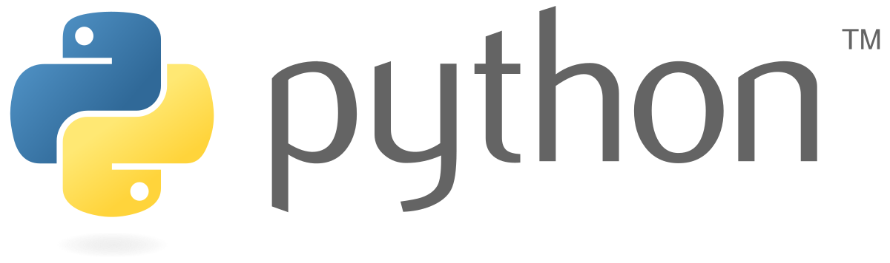

Python
pythonとは

今ドルトンの授業でもやっているpython(パイソン)は、プログラミング言語の中ではとても簡単な方で、
簡単にコードがかけて楽しみながらできるような言語です。Googleから
環境構築せずに(いろいろダウンロードしたりする準備がいらない)
コードが書けるツールが出ているので
よかったら使ってみてください。
pythonを使ったコロナの未来予測

僕は、前回のSTEAMFesで「pythonを使ったコロナの未来予測」という作品を出しました。
これは、pythonの追加機能であるnumpy等を使って東京都のコロナの統計からコロナがこれからどうなるかグラフを出すという作品です。
発表の時に使った説明用動画
p5.js
p5.jsとは
p5.jsという言語は、コードを書くことでデジタルアートを書くことが出来ます。
どういうことかというと、三角を作るコード、楕円を作るコードみたいなのがあって、それを使って絵が描けるんです。
実際に絵を書くと画伯と呼ばれても仕方がないような絵しか描けない僕でも、p5.jsを使うとおしゃれな絵や図形がかけちゃいます。
p5.jsはWeb Editerと呼ばれるツール(サイト)で簡単に書くことが出来て、楽しく作れるので是非やってみてください！！
あと、今回のアートフェスでは理科室2で僕を含めた4、5人の作品が展示されています！！！是非見てみてください！！
未来の地球学校のロゴマーク
僕はテーマラボで、電子工作×メディアアートラボに今入っており、そこで作品を作っています。このラボでは「未来の地球学校」というプロジェクトで色々な学校と一緒に活動している(まだ始まったばかりですが)のですが、
その仮のロゴマークをp5jsで作りました。この作品は僕とあと二人の合作となっており、デザイン、アイデア、製作に分かれて作りました。僕が製作担当だったので色々書いてこれを作りました。
今回のアートフェスで僕はこのロゴマークを増殖させてみたので、ぜひそこも見てください。
この作品のエディター
電子工作&プログラミングラボ
discord.py
discord.pyとは

discord.pyは、discordというSNSで使えるbot(ロボット、公式ラインみたいな感じ)を作るための言語です。
僕はdiscordを使う機会が多く、その中で既存のbotだけでは少し物足りなくなり、自分でbotを作ることにしました。
この言語は上で紹介したpythonをdiscordのbotでも使えるように対応させた言語です。他にも色んな作るための言語があったのですが、pythonに親しみがあったのでこれにしてみました。
実際に作ったbot
ボイスチャンネルに入ったり出たりするとその時間とその人が通知されるbotを作りました。(コード引用元)
これと、特定の文字を入力するとその学習グループの時間割が出るようにしてたりもしてます。